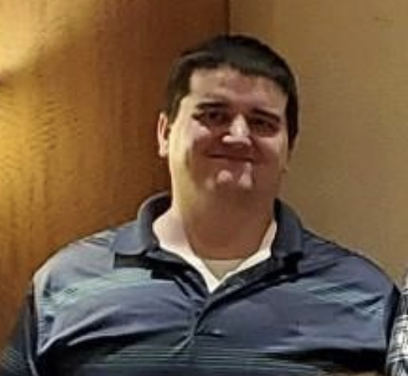

- Locations: Born on October 5th, 1990 in Toledo, OH and lived in Perrysburg, OH most of my life. I moved to Louisville, KY as a work-based relocation for almost 2 years and then moved back to Perrysburg before moving to Maumee, OH for almost 4 years. In 2021 I moved out to Vancouver, WA (a suburb of Portland, OR) on another work-based relocation and have been there ever since. Who knows where I'll end up next but if you have some place that is fun, let me know lol :)
- Family Status: Currently single with no children, but am always open to that next adventure in life! (Sorry gentleman, but sadly I'm one of those boring cis guys, so please do not apply lol)
- Education (more details on "Credentials" page):
- Grade School- Toth Elementary School & Perrysburg Junior High School
- High School- Perrysburg High School
- College- University of Toledo (Toledo, OH)
- Interests & Hobbies:
- Outdoor Activities-Hiking, biking, and walking are my big ones. Most of my time spent on during travels is spent in our country's national parks, and I enjoy them so much that I've made it a goal to fill out their passport book and travel stamp book. I find that time outdoors, enjoying nature and what it has to offer, is some of the most relaxing time I have and often provides some of the most beautiful views one can find (you will see plenty of that in my gallery). I think my favorite park is still Yellowstone (gotta show love for the first one), but Yosemite is a close second and I can see why the artist Thomas Hill spent so much time there. I even spent a day sweating my butt off in Death Valley and enjoying the lovely 109 F temperatures they have to offer there...but in all seriousness, it is definitely worth a see if you can stomach the heat.
- Martial Arts- Ever since I received my black belt in karate I have always had a fondness for the practice of self-defense and the sport. If you want a reccomendation for some real old-school fighting, check out "Breath" by Rickson Gracie...just make sure you don't have too weak of a stomach as his heyday was prior to the rules of modern UFC.
- Aviation- As you'll see from my pictures, I am a big fan of flight, so much so that I am a member of the Museum of Flight in Seattle, WA (probably my favorite museum in the country). One of these days I will get that pilot license, but until then I'll just be enjoying the Top Gun movies and playing some Ace Combat or Flight Simulator lol.
- Travel- I fancy myself as quite the wanderer (as you can probably tell from my living situation and pictures), but getting to hop on the road and drive through and to someplace new and/or beautiful is one of my great passions. I don't need any place too fancy to go to, and most of my nights are spent sleeping in my Honda (her name is Rhonda, lol), but as long as there's somewhere fun to go and an opportunity for adventure, you can count me in.
- Photography- I am by no means a professional, and my only real instruction was in a summer camp that was more of a daycare, but I am very fond of photography and as you'll see from my photogallery, I have racked up quite the collection. I don't have any professional equipment or even a tripod, but I find the quality of the iPhone 12's camera to be very good and it allows me to do what I really enjoy with photography, sharing. I'm very lucky to have a life that allows me to go to the places I go, and eyes that still seem to work very well, so if you see me out-and-about, you'll most definitely see me taking lots of pictures to text to my loved ones and share with all the people that might not get to have the experiences that I do.
- Climate Science & Green Technology- I enjoy learning about the new technology and scientific achievements that are being made everyday in this subject, from solar panels innovations to the Traveling Wave Reactor. You'll even notice in my gallery that I have a picture of one of the first electric vehicles, a 1903 Surrey, powered by 40 2-volt batteries and capable of 60 miles per charge. Hard to believe how much has changed between then and the E-Mustangs and Teslas of today.
- Reading- In terms fiction, one of my favorite authors is Ian Fleming (James Bond novels), as I find his writing style and tastes to be very interesting (he was also a former member of OSI, which explains his desire to write spy novels). More recently I have read through all the Jack Reacher novels (until Lee Child stopped writing them on his own), but I enjoy the works of many different kinds of authors and their styles such that my tastes could be described as "all over the library" lol. I also spend a good amount of time reading technical books and manuals, but I won't bore you with those ones.
- Coding-I am by no means an expert, and aside from a few online courses and downloaded classes, am entirely self-taught, but I do really enjoy the practice and have alot of respect that make this field a profession. I've done a variety of activities from learning to program in the dread "shell" to more advanced environments like XCode for some iPhone development with Swift and some Visual Basic in Visual Studio, Excel, and some of the more popular controls platforms from my time working in the instrumentation and controls field. As a compiled language, I'm pretty fond of C/C++, but for most of my quick computational work I enjoy working with Python as I find it to be very straight-forward and user-friendly.
- News & Politics- I will keep this section brief as it is an incredibly polarizing topic, but I tend to watch and read media from all sources as I believe it is the only way to ensure you have a complete understanding of all sides. Left, right, or middle (if that even exists anymore) are all welcome to approach me for a discussion and I will do my best to hear you out without being judgemental. I tend to find myself spending most of my time listening to NPR as I find them to do a bit less sensationalizing of the news compared to most sources on the air these days.
- Target Shooting/"Guns"- I wouldn't describe myself as a "gun nut", but I do have an appreciation and enthusiasm for taking my collection of pistols, and a few long guns, out to the shooting range. Depsite my fondness of the quiet and serenity that nature has to offer, I do find the noise, smells, and excitement of the shooting range to be fun too. I'm a big fan of Glocks, and have a pretty cool Glock 43 that I've tricked out with all the bells and whistles, but I think my favorite is still my HK P30L. If you're looking for a cheap starter pistol though, Kahr Arms makes a surprisingly good one, just don't expect it to be as easy to assemble and disassemble as the other more expensive options since it doesn't have a captive recoil spring or some of the more expensive takedown features you'll find on other guns.
- Movies- I am particulary fond of the "Jason Bourne" series of movies (I've even read a few of Robert Ludlum's books), but I definitely enjoy a wide span of films from action movies, such as "Top Gun: Maverick", which I thought had amazing cinematography, to comedies such as "The Big Lebowski" or even the occasional old-school Adam Sandler movies. Suffice it to say, if you got something you want to watch, I am down for a viewing party.
- Video Games- In my younger years I was alot more time on video games than I do now, so much so that I even assembled my own gaming PC, but nowadays I still casually enjoy the occasional game. My favorite game of all time is probably still the 2002 Game of the Year: Star Wars: Knights of the Old Republic that I played on the original XBox, but more recently I've gotten into flight and driving simulation games, and have spent probably too much time on a factory-simulation game called "Factorio" which is largely a game based around circuit analysis...goes to show how old I've gotten.
- New Activities-I recently picked up skateboarding and skim boarding as something fun to do on my road trips and as a way to enjoy some of the places I go a little more. Don't expect any tricks, or me to go very long without falling, but I am working my way up to Tony Hawk/Kelly Slater levels.
- General- I am a pretty easygoing person that enjoys new places, activities, and people such that I am typically open for anything. Aside from getting to share my experiences with people less fortunate than I am, one of my favorite parts about my road trips and travels is getting to experience the differences each place has to offer and getting to meet new people and hear about what life is like in their corner of the world. So if we ever do cross paths, don't feel like you need to engage in one of my hobbies or interests, as I am much more interested in learning about yours!
- Future Goals- While I would like to eventually start a family and "settle down" to a degree, on a personal level I would like to do alot more traveling (especially globally) and eventually work for a non-profit, or maybe even start my own if I reach the skill-level to do so. I find helping people with their many struggles from food, water, shelter, and even mental health problems to be highly rewarding and I hope to find myself to one day be in a position to do so at a much larger scale than I am capable of doing now. But as for now, I am content to do what I can for people while trying to enjoy my youth as much as I can before it's gone :)
- Weight Loss- After spending many years overweight (my max was 330 lbs), I decided to finally get make a plan and spent almost 2 years exercising and dieting in order to get down to my current weight of 172 lbs. It definitely wasn't an easy project by any means, and I most certainly didn't spend years with perfect diet and exercise habits, but the commitment to keep on pursuing my goal was what made it possible. I've read quite a few books on the subject and have done a lot of trial and error throughout my life, so if anyone wants any tips or pointers, please feel free to reach out to me through one of my contact addresses and I will try my best to provide some guidance.
Old Me - Jan 2021
